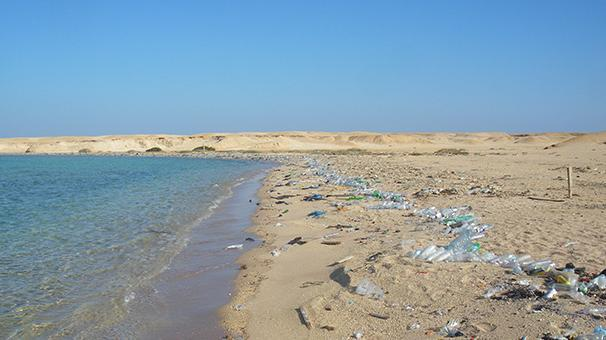
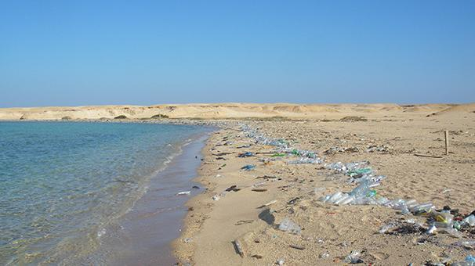

Avec la création de son association The SEA CLEANERS dédiée à la lutte contre la pollution océanique, Yvan Bourgnon se lance dans la construction d’un navire révolutionnaire, un quadrimaran, Le MANTA. Il est capable de collecter (600 m³ de capacités de stockage), de trier et de compacter en mer une grande quantité de macro-déchets plastiques flottants, une usine embarquée. Le Manta sera propulsé par des voiles DynaRig et par quatre moteurs électriques, il combine la production d’énergie renouvelable associée à un système de stockage énergétique optimisé.

Le Manta est une des solutions pour l'environnement, tout comme être éco-citoyen.